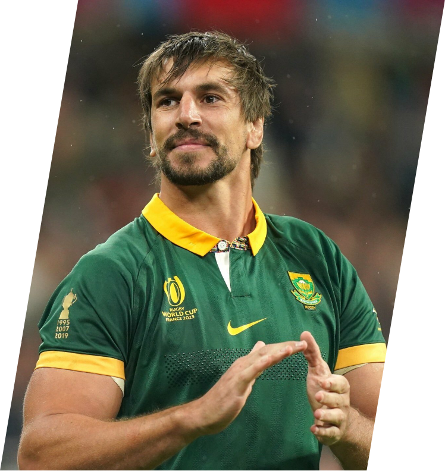

|  | |
Eben Etzebeth (Ciudad del Cabo, 29 de octubre de 1991) es un jugador sudafricano de rugby que se desempeña como segunda línea para los Sharks de Durban del euroafricano United Rugby Championship, y para los Springboks internacionalmente. Etzebeth es el sudafricano que más veces ha representado a su selección y ha sido nominado a Mejor Jugador del Mundo en tres ocasiones, en 2013, 2023 y 2024. Etzebeth fue considerado desde temprana edad una gran promesa del rugby sudafricano desde que jugaba para Tygerberg High School en Ciudad del Cabo, de ahí pasó a formar parte del equipo juvenil de Western Province en 2009. En 2011 su carrera dio otro salto al firmar por los Ikey Tigers, equipo de la universidad de Ciudad del Cabo que está dentro de la estructura de cantera de los Stormers, equipo con el que ganó el título universitario, sin embargo una lesión cortó su progreso en el segundo semestre del año y no pudo jugar en la Currie Cup de 2011. |